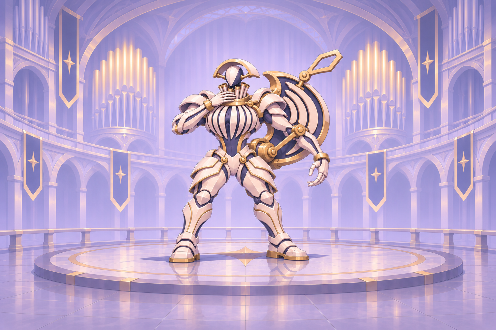
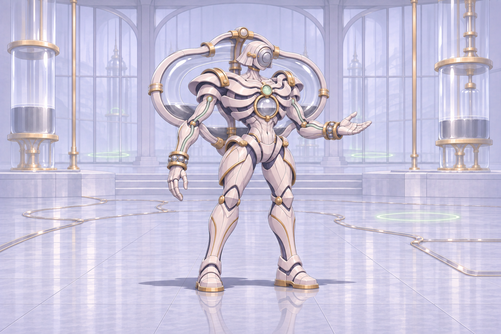
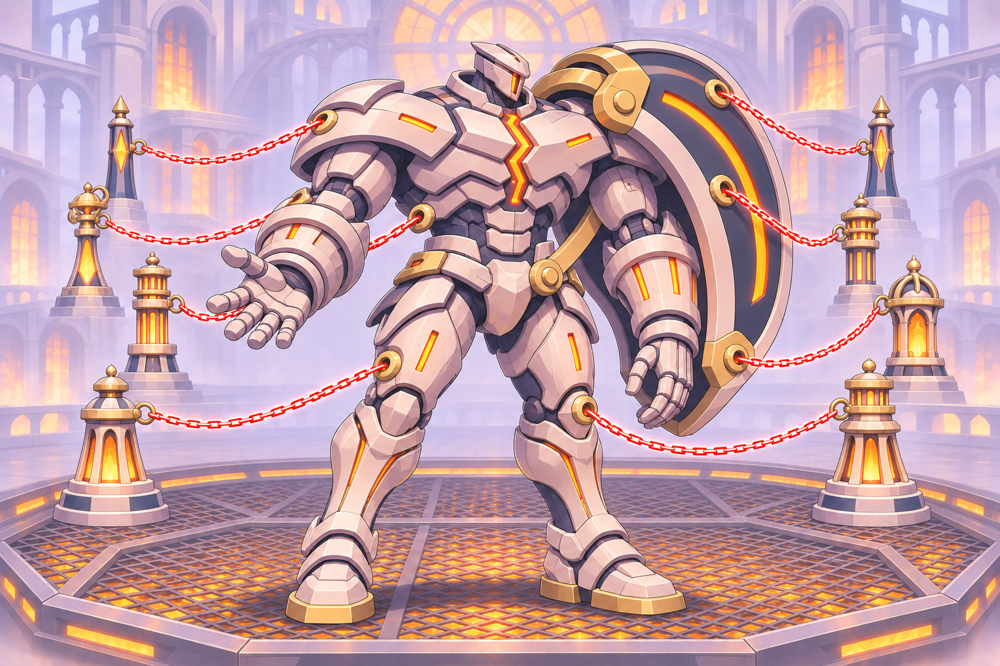
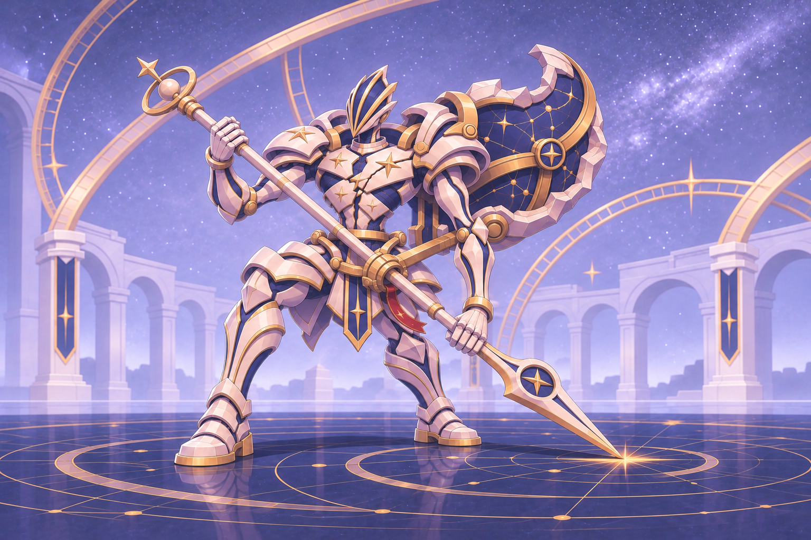

좋아하신 1스테이지 1안의 체급과 화풍을 기준으로, 각 층의 고유 장치와 서사를 유지한 전신 콘셉트입니다. 스테이지별 한 장씩, 총 다섯 장입니다.

파이프 목과 봉인면 유지. 큰 초승 공명판, 외부 태엽 캠과 팔 구속 장치.

의료계기 가면과 여성 체형 유지. 큰 폐순환 수은 성유물과 흉부·팔 순환계.

두꺼운 중갑과 거대 건틀릿. 견갑·허리 지지대로 연결된 대형 어깨 방패와 8사슬.

원본 시침 창과 별 흉갑 유지. 어깨·척추·골반으로 하중을 받는 부서진 천구 성도.
봉인 베일 가면, 열린 시계 심장, 여섯 초침 날개. 왼팔 칼날을 붙잡는 인간 오른손.
 STAGE 6
STAGE 6